A Comparison of Chunk Size for Software RAID-5
Linux Software RAID Performance Comparisons
The Problem
Many claims are made about the chunk size parameter for mdadm
(--chunk). One might think that this is the minimum I/O size across
which parity can be computed. There is poor documentation
indicating if a chunk is per drive or per stripe. This study
determines that.
The Controller
- Supermicro AOC-SAT2-MV8
- 8 SATA II ports
- 64-bit PCI-X133MHz (tested in 32-bit PCI slot)
- Chipset: MV88SX6081
- Linux driver: sata_mv
- Cost: $99.99 from newegg.com
- Configuration: JBOD
The Test System
- Motherboard: Asus K8N-DRE
- Processors: Two 1.8GHz Opteron 244
- RAM: 8GB DDR400 running at 333MHz
- Slots: 1 32-bit PCI; 1 PCI Express x16
- Drives: Seagate Barracuda 7200.11 1000Gbytes ST31000333AS
- Drive cage: Supermicro CSE-M35T-1B 5-Bay Enclosure (fits in
three 5-inch chassis bays; sells for about $100-$120 from
newegg.com)
- Ubuntu (Intrepid Ibix), Linux 2.6.27-11-server
The Test Matrix
- Read Percentage: 100% (pure read), 50% (mixed), 0% (pure write)
- Random Percentage: 0% (sequential), 100% (random)
- Thread counts: 1 and 20
- Block sizes: 4k, 8k, 32k, 64k, 256k, 1m, 4m, 8m, 64m
- Targets: All 5 driver were tested simultaneously, as well as
each drive individually.
- All I/Os are issued using the O_DIRECT flag.
- All tests last 20 seconds.
Conclusion
Different chuck sizes have different performance characteristics for
different I/O sizes and workload types. In general 128KB provides
the most consistent and highest throughput, except when doing random
reads using an I/O that is a multiple of the stripe sizes (e.g.,
256KB I/Os on a 4+1 RAID-5 with 64KB chucks).
For 3+1 and 4+1 RAID-5s, I recommend a chuck size of 128KB for the
best overall throughput characteristics.
Sequential Single Threaded Tests
For 100% sequential reads, we see that a chunksize of 1024 has
maximum throughput for 4MB I/O sizes. This is compatible with the
strip size being the number of data disks multiplied by the chunk
size. Unfortunately, no datapoints were taken for a 3-spindle
RAID-5 at I/O sizes of 3 times the chunk size.
Clearly, chunk sizes that are too large or too small have
pathological behavior at certain I/O sizes. Chuck sizes of 64KB and
128KB have good performance through 1MB I/O sizes without notable
pathology.
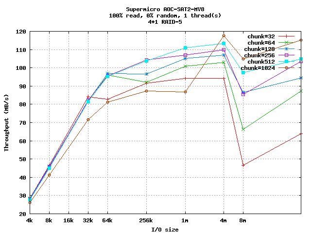
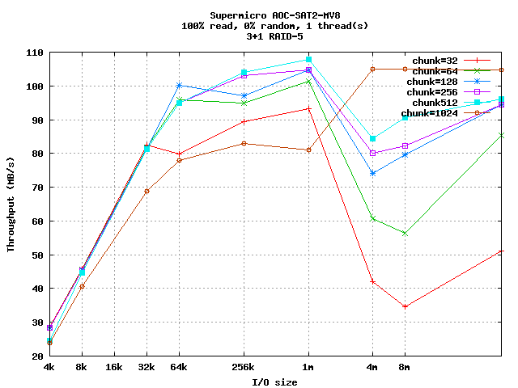
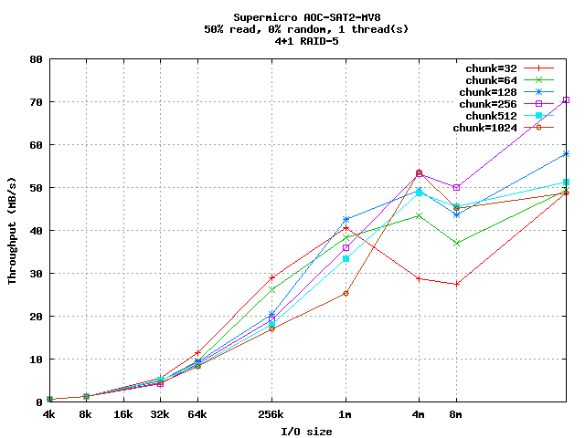
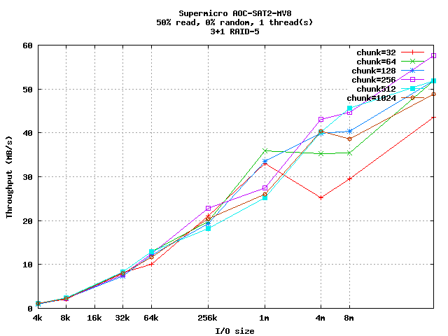
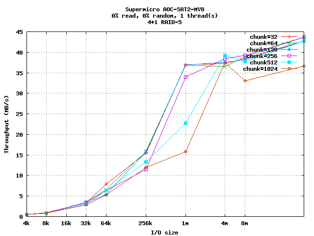
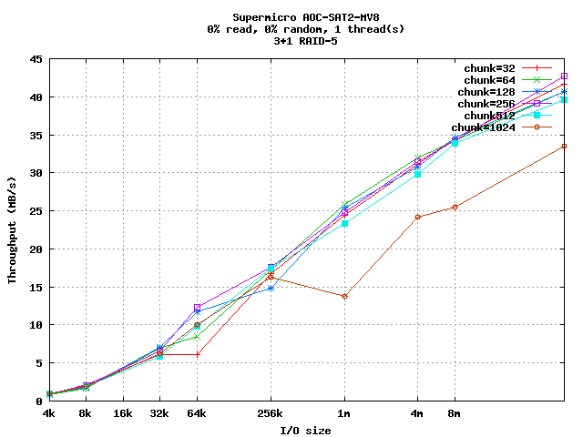
Random Single Threaded Tests
Again, chuck sizes of 64KB and 128KB have reasonable performance
across I/O sizes. 64KB may be better for 256KB writes.
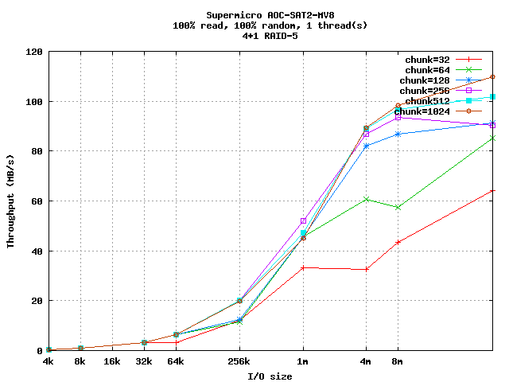
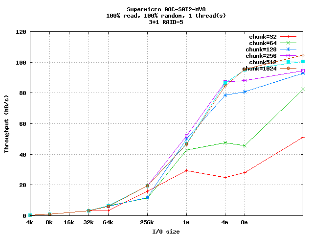
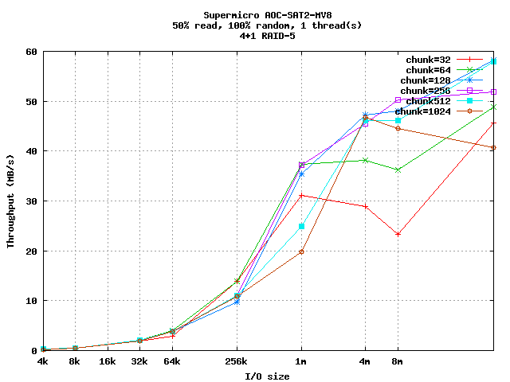
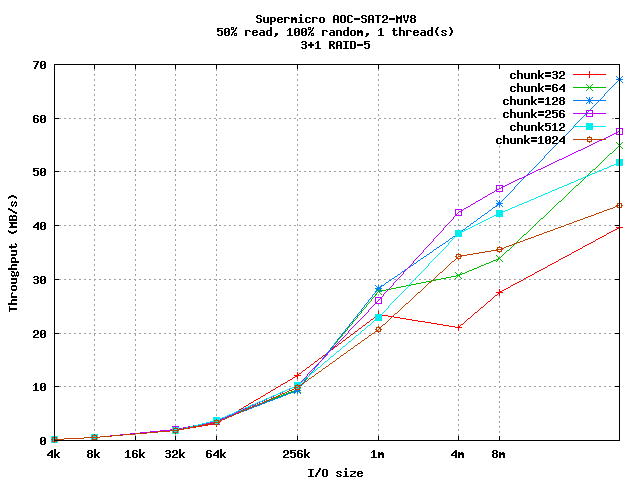
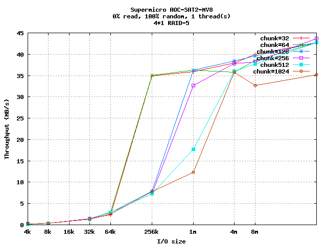
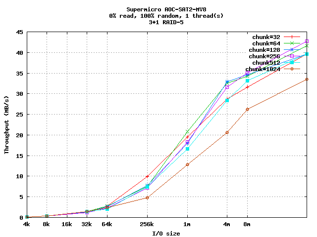
Sequential Multi-Threaded Tests
Here the 64KB chunksize does significantly worse than 128KB for 100%
random reads.
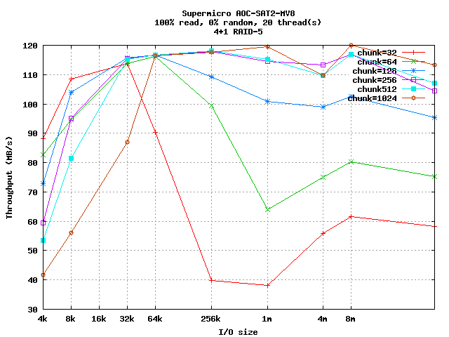
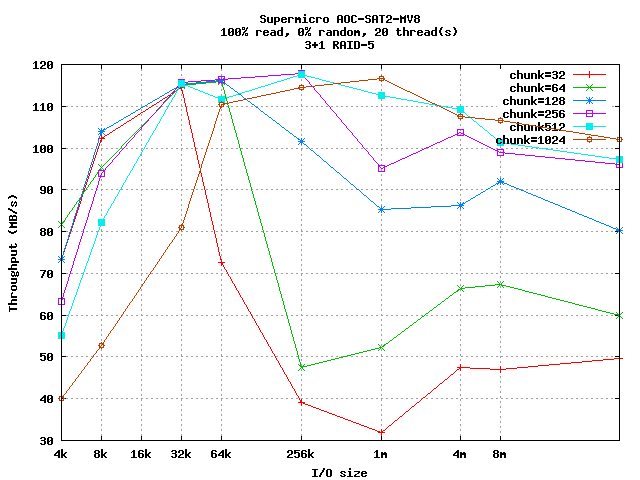
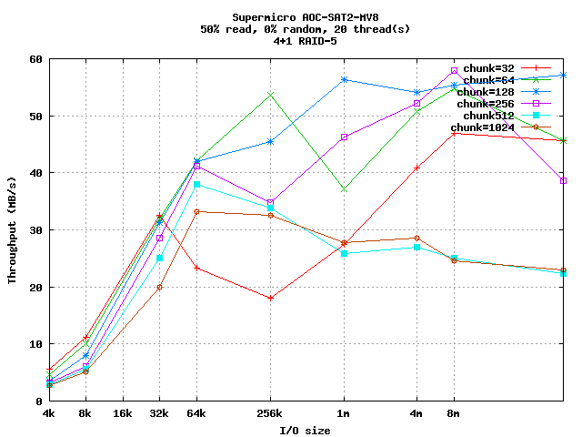
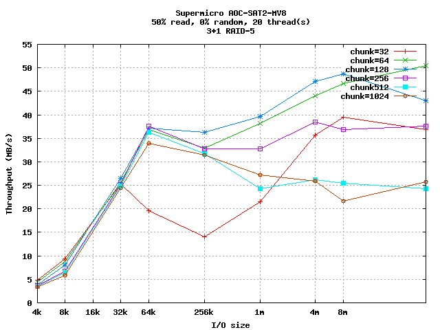
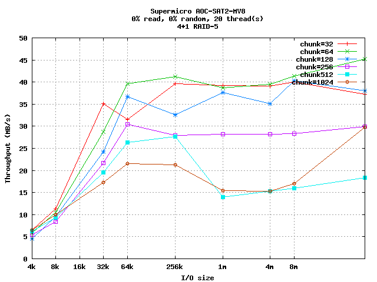
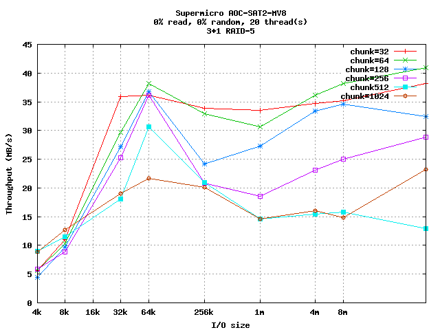
Random Multi-Threaded Tests
For multi-threaded 100% random writes, smaller chuck sizes seem
better, with 32KB providing peak performance. Again, 64KB and 128KB
chuck sizes are consistent across I/O sizes, except for 100% random
reads, where 1MB chucks provide consistent peak performance.
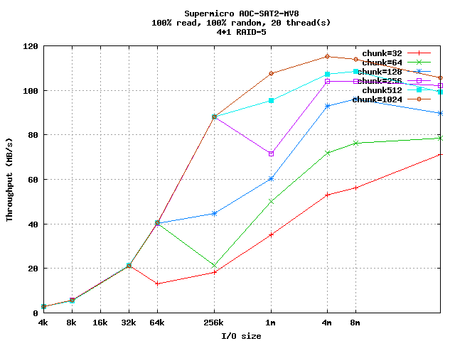
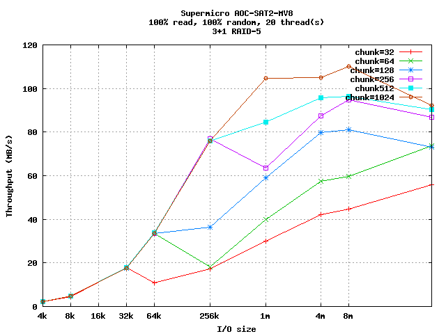
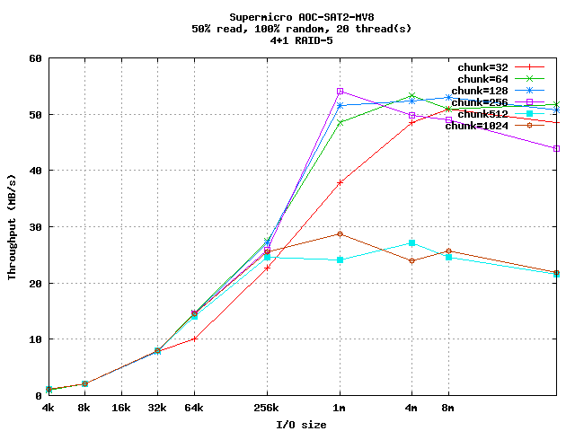
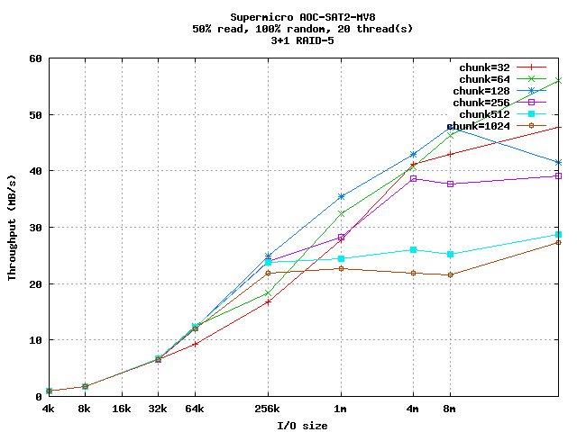
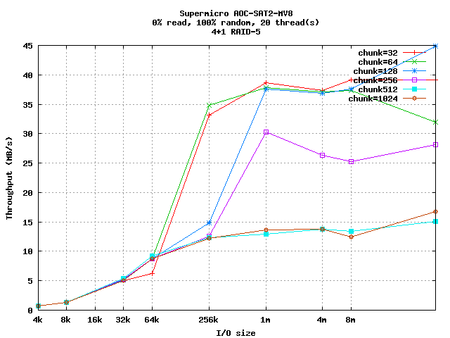
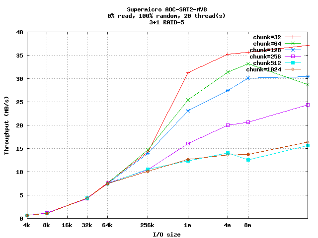